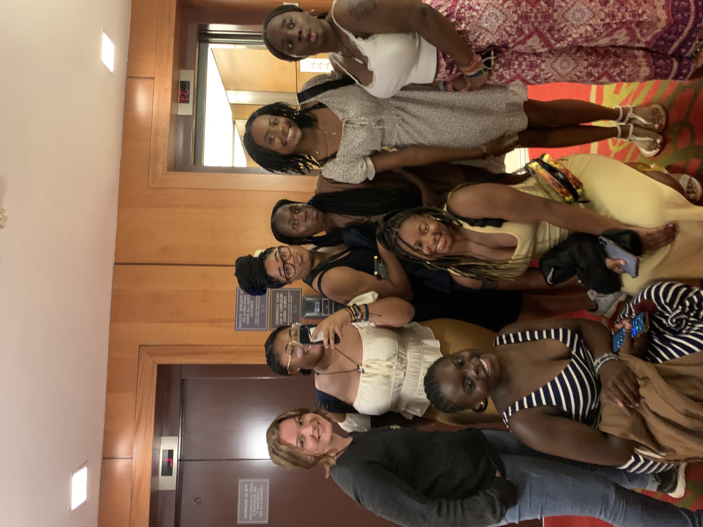
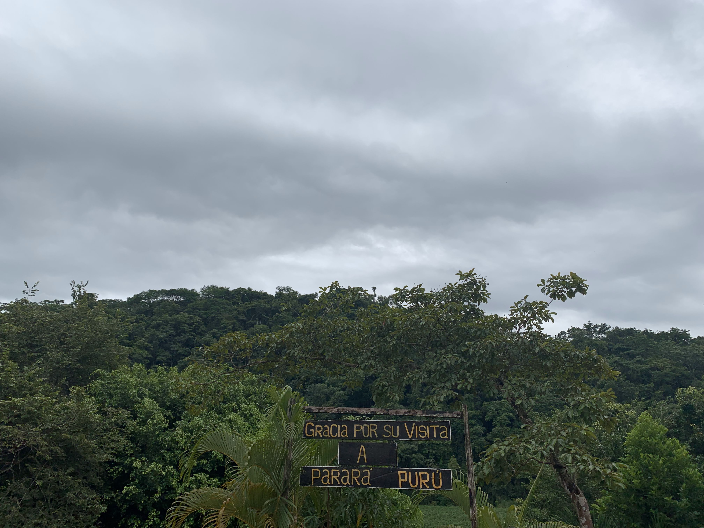
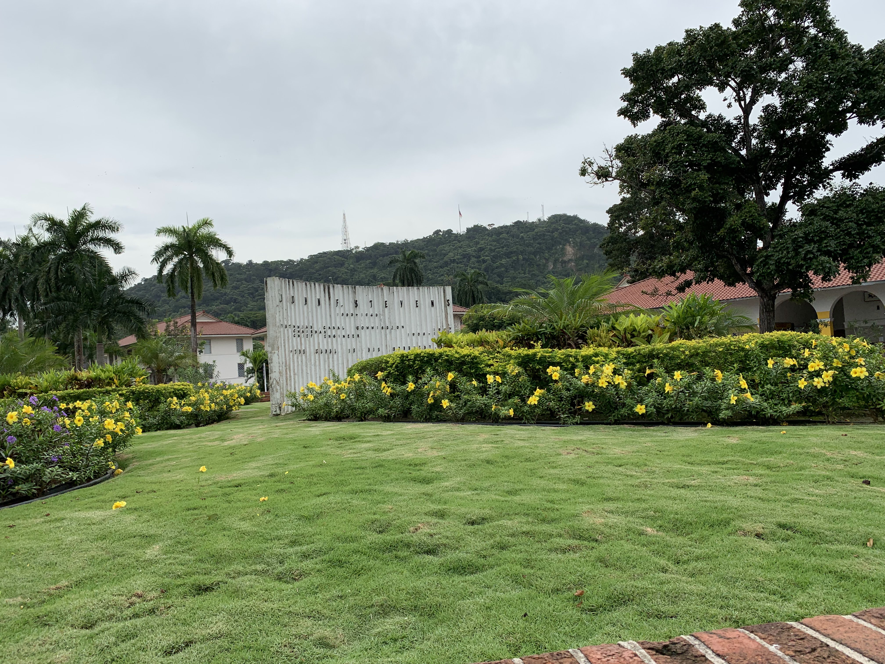
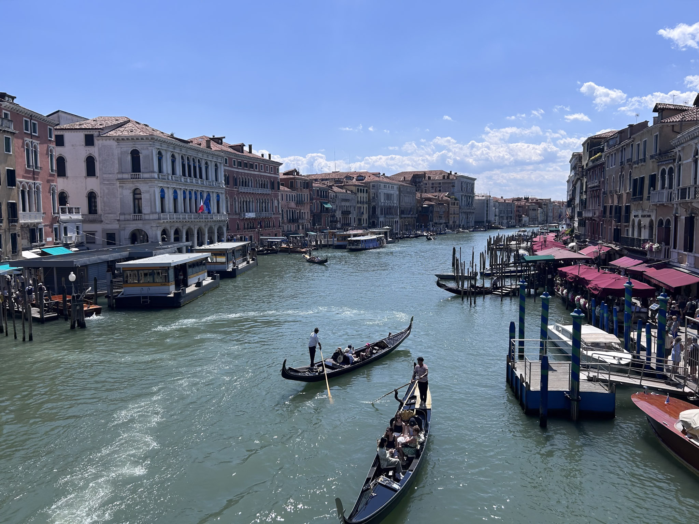
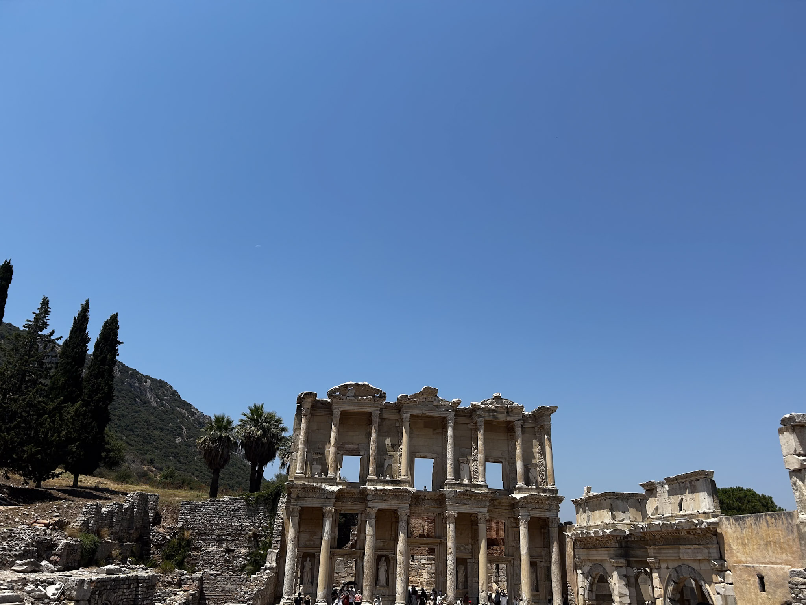
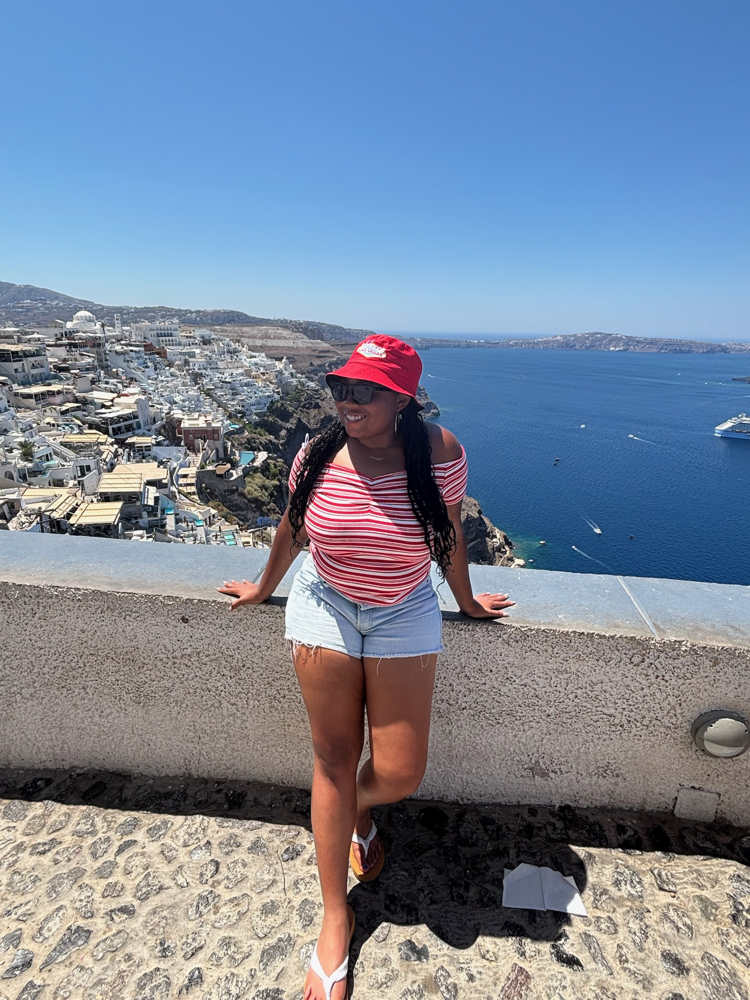

This trip was a high school trip I went on in 2022 with a friend from school and some teachers that I really adore to this day. Panama is truly beautiful, and during our visit, we toured a pineapple farm where we learned about the process of growing and shipping pineapples. The farm uses crates to transport the fruit, laying them vertically for air transport and horizontally for longer journeys.

.jpg)
I was exposed to the rich culture and visited several cities in Italy, including Milan, Rome, and Venice. My family and I spent three days in each city, exploring museums and renowned attractions. We marveled at the gigantic Starbucks, the Duomo Cathedral, the iconic Rialto Bridge, the historic Ghettos, and the painting of The Last Supper.


I really wish I stayed longer in Greece. We explored Greece while we were on the cruise. We went to multiple different cities, including Athens; we started there first, and then we went to Mykonos, and then lastly we went to Santorini.
I explored the architecture of Santorini, which is perched atop a mountain. We had the option to take a cable car up, or we could walk or ride a donkey. Santorini is incredibly beautiful, featuring many popular beaches on the other side of the island. We visited one beach with black sand, which was a wonderful sight, and the Mediterranean was refreshing.
St.Martin was an unexpected blessing of an island. I have been to a lot of other islands in the Caribbean, but I had a lot of fun there. We explored only the beaches and were welcomed by the native people. The trip was also for my sister’s graduation cruise, with many other family members who accompanied us on the trip. St. Martin was the first stop on the cruise, and we got a really bad sunburn. We enjoyed the beach on this hot, sunny day. My sister did jet skiing and paddle boarding, and as a family we did banana boat. It was extremely fun and filled with excitement.